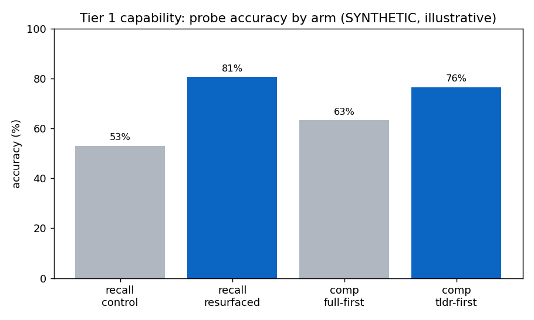
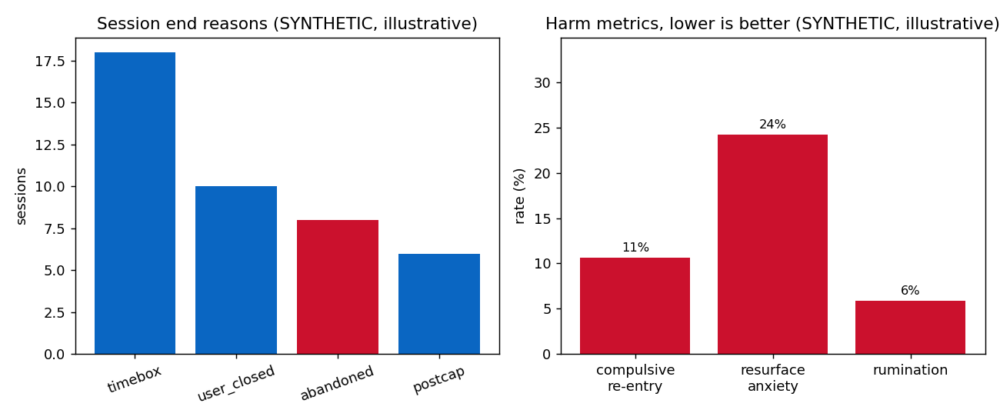

Executive summary
LinkedIn and its peers publicly commit to caring about user wellbeing. ADHD Mode is what that promise looks like when it is designed seriously: a bounded Focus Session, embedded inside LinkedIn's native surface, that reshapes the feed around how ADHD and Cognitive Disengagement Syndrome (CDS) cognition actually works.
The design hinges on three load-bearing ideas: bounded sessions instead of infinite scroll, LinkedIn reactions repurposed as a personal spaced-repetition layer (reaction-seeded fixed spaced intervals), and a set of vertical gestures that move in the directions users already scroll. Long posts are reflowed into TL;DR-first paged cards. Sessions end with a closure ritual that gives users permission to leave.
Two sub-modes (Focus for scattered-but-energetic days, Re-engage for foggy days) adjust pacing and density. The design preserves every revenue-relevant signal LinkedIn already collects.
Selective attention on LinkedIn
Before you read another sentence, look at this feed for five seconds. Then close your eyes.
How many posts mentioned hiring? Did you see the layoff? What color was the second profile photo? How many notification badges were there?
You had neurotypical attention and you still missed most of it. This is what people with ADHD and CDS navigate every time they open the app.
The wellbeing-promise gap
Major platforms have made public commitments to user wellbeing. Instagram's "Take a Break," screen-time tools across iOS and Android, LinkedIn's own member wellbeing pages. These commitments exist alongside product surfaces optimized for indefinite engagement: infinite scroll, autoplay, escalating notification counts, algorithmically novel content, reaction counts that anchor judgment before evaluation.
For attention-typical users the gap between promise and product is uncomfortable. For ADHD and CDS users it is exclusionary. These users are required to use LinkedIn for professional reasons (job search, network maintenance, industry awareness) and are then confronted with a surface that is structurally hostile to how their attention works.
A composite voice, disclosed up front"I open LinkedIn to find one job posting, lose forty minutes, and could not tell you a single thing I read."
Drawn from public ADHD and CDS community threads. Not a single attributable quote, and not presented as one.
ADHD Mode closes that gap honestly. It is not an attack on the business model, not a competing app, and not a punishing time-limit tool. It is a feature that says: when you need to use this platform with your kind of brain, here is a way to do that without the bottom falling out.
The cognitive science the design responds to
Every mechanic in this design traces to a finding in the cognitive science literature, a documented HCI principle, or an explicit designer's hypothesis marked as such. The audience this serves is not small: adult ADHD prevalence in the United States is estimated at roughly 4 to 5 percent.1 That figure carries the business case, so it gets a source rather than a round number.
ADHD cognition
Combined and hyperactive-impulsive ADHD presentations share four documented patterns relevant to feed design. Delay aversion and time blindness: people with ADHD systematically under-perceive elapsed time and steer away from delayed reward, a pattern Sonuga-Barke models as a motivational style in its own right.2 Executive-function and working-memory load: Barkley's self-regulation model treats ADHD as a deficit in holding and acting on internally represented information.3 Novelty-seeking and impulse interaction. And hyperfocus collapse, where time perception disappears once attention is captured.
Cognitive Disengagement Syndrome
CDS, formerly known as Sluggish Cognitive Tempo, was renamed via expert consensus in 2022.4 Its defining cognitive signature is "accurate but slow" across attention and executive-function tasks.5 CDS users reach correct answers but at significantly reduced processing speed. The implication for feed design is not faster forgetting; it is slower encoding. Content presented at typical density or pace is missed or skimmed past without absorption.
A marked hypothesis: the Mayes study measured children, not adults.5 Applying its "accurate but slow" profile to the working adults this design serves is a deliberate generalization that stops short of a finding, and it sits on the list of things to validate before any strong claim is made.
Spaced repetition
Spaced repetition has been a documented memory-consolidation strategy since Ebbinghaus mapped the forgetting curve in 1885,6 and it is validated extensively in modern learning science. Its application to ADHD populations rests on working-memory-load reduction and alignment with shorter attention spans; one of the few ADHD-specific consolidation studies found that scheduling practice well supports procedural memory in this group.7
Interaction principles
The design also draws on documented HCI principles. Fitts's Law: magnified targets reduce time-to-acquire and error rate.8 Hick's Law: choice time grows with the number of options, which is why the common path carries no decisions and the richer reaction set opens only on demand.9 Preview-before-commit: a visible label during a swipe gives the user a chance to back out, which speaks directly to the response-inhibition deficit Barkley describes.10 And effort-matched-to-consequence: the low-stakes default is cheap, the high-stakes deliberate action asks for more intent.
What this design is not: a medical intervention. The framing throughout is "design that respects how these cognitive profiles work," not "treatment."
Seven falsifiable principles
The constraints held throughout. Each one is a test the design must pass rather than a vague aspiration.
- Embedded, not bolted on. Every visual, every interaction, every piece of copy reads as something LinkedIn could ship. No competing identity. No wellness-app pastel.
- Beauty in simplicity. If a screen needs more than its data and structure to be understood, the design has failed. No marketing copy on operational screens.
- Research-grounded. Every mechanic traces to a cited finding, a documented HCI principle, or an explicit designer's hypothesis marked as such.
- Respects the business model. The design preserves LinkedIn's social signal: reactions fire normally, notifications go out, content reaches authors. It improves engagement quality without attacking engagement quantity.
- Respects scroll muscle memory. Every swipe and drag moves in the direction the thumb already travels on a feed, so nothing has to be unlearned.
- Accessible by default. Every gesture has a tap-based fallback. Motor coordination differences are accommodated.
prefers-reduced-motionis honored everywhere, and the fallbacks stay meaningful instead of stripped-down. - Closure, not abandonment. Sessions end with a calm finish, not a "you've been here too long" scold.
Principle six is only worth stating if it holds up to a meter. Three things it has to clear:
- Contrast, measured
- Body text is ink on paper at 16.6:1, well past the WCAG AA floor of 4.5:1. The coral accent reads 4.07:1 on paper, so it is reserved for large display type and decorative marks where the 3:1 large-text bar applies, and never carries small body copy. Links keep their underline so color is not the only signal.
- Every gesture has a tap
- Reacting works by dragging the card to a slot or by tapping the React FAB and tapping a reaction. Skipping works by swipe or by the top skip target. No interaction in the session is reachable by gesture alone, so motor-coordination differences are never a wall.
- The resurface count is announced
- When a reaction seeds the queue, the visible ↻ topbar count ticks up and a polite
aria-liveregion speaks it ("Reacted insightful to Maya Chen's post. Saved to resurface."), so the badge is never the only way to know the post was saved.
prefers-reduced-motion is honored across the prototype, the screens, and this page, with calm fallbacks rather than dropped state.
The option space
A finished design reads as inevitable, which hides the part worth evaluating: the directions considered and the reasons they lived or died. This is that map. Nothing here is reconstructed for the writeup; each cell survives in the commit history or the exploration archive.
The fork that mattered most, the tray becoming the dock, is unpacked in the walkthrough below.
The product, screen by screen
Entry point
The ADHD Mode entry is a card placed near the top of the LinkedIn home feed. Discoverable but quiet. The brand-gradient mark and the single-line description signal what the mode does without overselling it.
Session setup
Two choices: mode (Focus or Re-engage) and length. Re-engage's tile copy ("Foggy or slow. More room per post.") is deliberately non-clinical. The user does not have to self-diagnose to use the right mode.
The active session (try it)
One post at a time, full-bleed, with nothing in the periphery competing for attention. The bottom dock has two liquid-glass FABs at the corners: Comment on the left (tap to compose) and React on the right (tap to expand a reaction tray that grows leftward to reveal six reactions). The skip target at the top is a small teaching affordance that fades in once.
Two paths to the same outcome. Tap-friendly: tap the React FAB, then tap a reaction. Gesture-friendly: drag the card down toward the dock and the React FAB auto-expands; release on a slot to commit, with magnification and a floating preview tracking your thumb. Velocity carries into a spring on release, so a flick continues past your finger with momentum. Long-press a slot for a held preview.
This is the centerpiece screen, shown here at rest with one post tagged Insightful and its resurface affordance visible:
And the live version, where the physics are the point:
The fork in the road: how the dock got here
The dock did not start as a dock. The first build of the active session sat a permanent six-emoji reaction tray across the bottom of every card, always open, plus a separate compose-prompt strip above it. The thinking was reasonable on paper: keep every reaction one tap away, never make the user hunt.
It failed against the second principle, beauty in simplicity, and it failed against the research. Six always-visible targets is exactly the standing decision load Hick's Law warns about: every card asked the user to scan and choose before they had even read it, and Barkley's work on response inhibition says that is the worst tax to put on this audience up front. A quick self-test settled it. Reacting is the rare action; skipping and reading are the common ones. A control surface sized for the rare case was crowding the common one on every single post.
The revision collapsed the strip into the corner Action Dock you see above: two resting FABs, with the full six-reaction set tucked behind the React FAB and revealed only on demand, by tap or by drag. The common path now carries zero decisions; the richer set is one gesture away when it is actually wanted. Same six reactions, a fraction of the resting load.
One detour inside that revision is worth admitting because it did not survive. While tuning the drag, I built a metaball goo effect, a gooey blob that stretched between the card and the reaction bubble so the two looked physically connected as you pulled them together. It demoed beautifully and it was the wrong call: it drew the eye to the mechanism instead of the decision, and it could not honor prefers-reduced-motion without becoming a different interaction entirely. I reverted it and kept the calmer floating preview. Restraint is a principle here, and the principle had to win over the trick.
Mid-session check-in
At the cap, the user is given a deliberate choice: wrap, extend, or pause. The primary action is "Wrap up", the easy default takes you to closure. Extending the session is the deliberate choice.
End of session
The closure ritual. A calm card, a plain headline of the session in numbers, three summary stats, two items returning later, and a primary action that takes the user out of LinkedIn rather than back into more feed.
LinkedIn reactions as spaced repetition
The most distinctive move in the design. LinkedIn already has six reactions: Like, Celebrate, Support, Love, Insightful, Funny. Inside ADHD Mode they keep their social function (the notification still fires, the author still hears about it) and take on a second one in the background: scheduling the post into a private resurface queue.
| Reaction | Social signal | Resurface behavior |
|---|---|---|
| 💡 Insightful | Standard | About 3 days, then a fixed widening interval |
| 🤝 Support | Standard | About 1 week |
| ❤️ Love | Standard | About 2 weeks |
| 🎉 Celebrate | Standard | Surfaces on next profile visit |
| 👍 Like, 😄 Funny | Standard | No resurface |
| No reaction | None | No resurface, no penalty |
The mapping is deliberate. Insightful, Support, and Love are the three reactions whose emotional signal most strongly implies "I want to remember this" or "this person matters to me." Like and Funny are ephemeral acknowledgments; they don't deserve future attention bandwidth. Celebrate is moment-specific; it surfaces only when relevant (next profile visit).
The reaction order is not LinkedIn's default. The three resurfacing reactions sit at the deliberate far end of the tray, and Like sits under the resting thumb, so the cheap acknowledgment is the easy reach and the reactions that schedule future attention take one beat more intent. The ergonomics enforce the memory mechanic; the layout is doing metric design.
What ships, and what the research build adds
The shipped mechanic is reaction-seeded fixed spaced intervals. A qualifying reaction seeds the post into the resurface queue and schedules it on a fixed widening curve (about three days, then a week, then longer). It is deterministic and inspectable: the same reaction always produces the same schedule, so the user can predict and trust it. This is not the SM-2 algorithm. It is the simplest scheduler that does the job.
The research build evolves the scheduler toward SM-2, where grade-driven ease factors stretch or compress each interval. The grade comes from a short recall probe at the second touch: the user states the post's core claim before it is re-shown. That probe earns its keep twice over. It tunes the spacing, and it yields a capability signal we can measure (recall accuracy on resurfaced posts versus a non-resurfaced control). The shipped version trades that signal away for simplicity and trust; the research version buys it back.
The scheduling stays out of the way. The user does not see "this returns Tuesday." A small ↻ counter in the session topbar grows during a session. The full queue is browsable in settings, and every item in it can be inspected or removed; no resurface item announces its arrival.
Your past attention curates your present attention. The mechanism is invisible. The benefit is not.
Long-post reflow
LinkedIn posts above ~60 words are reflowed in ADHD Mode into a chunked, paged structure. The first card is always a TL;DR; subsequent cards are body chunks split on narrative beats. This addresses the wall-of-text overwhelm and the sunk-cost trap simultaneously.
The TL;DR-first ordering is the key move. "See more" hides text but forces a sunk-cost decision: once you start reading, ADHD users feel obligated to finish even when the post is not paying off. TL;DR-first lets you decide before starting. If the summary is not for you, skip the post entirely. If it is, the paged structure means you always know how much further the post goes and you can choose to continue or wrap.
One block, one sunk-cost decision, no sense of how deep it goes.
Summary first, beats paged, and you always know how far it goes.
The pipeline is five steps: detect and classify, generate TL;DR (third-person referent so the summary reads as orientation rather than the author's voice), chunk by beat (paragraph boundaries and narrative breaks, not arbitrary word counts), preserve visual hierarchy (lists stay together, quotes stay intact), and in Re-engage mode only, prepend a "what you'll find" comprehension scaffold.
Where AI stops
AI orients and scaffolds. It does not decide what you re-see, and it never optimizes for time on app.
The mode uses a model in a few narrow places, and the line around it is drawn on purpose. The scheduling that gives the feature its point stays deterministic and user-owned, so the parts a person needs to trust are the parts a person can inspect.
- Generate the per-post TL;DR for long posts (an LLM call in production).
- Power the optional recall and comprehension probes in the research build, writing the question and grading the free-text answer.
- Draft an optional reflection prompt at closure, which the user can ignore or edit.
- Choose what resurfaces. That is driven by the user's own reactions, deterministically and transparently, and the queue is always visible and editable.
- Rank or curate the feed for engagement. The session preserves native chronological order or the user's existing feed order, and adds no engagement-optimizing ranker.
- Set or nudge session length. The user sets the bound.
Why this is the credible version of the wellbeing promise
The design carefully preserves the business model. Reactions still fire to authors. Notifications still escalate. Content still reaches the people who posted it. What changes is the quality of attention for users who would otherwise scroll-and-bounce or doom-loop without absorbing anything.
The case to make in a product review is that you can serve these users well without spending the business to do it. The capability metrics in the next section define whether the mode works. The engagement guardrails (7-day return, reaction mix, opt-in) only have to stay healthy enough to show the feature is not costing the business while capability moves. If the capability metrics hold and the guardrails stay flat or improve, the mode pays for itself. If capability does not move, the design needs rework rather than incremental polish, and saying so plainly is part of the proposal.
What I would measure
This is the part most feed features get backwards. They pick engagement as the success metric, then call any lift a win. Here the order is inverted on purpose: capability and outcome come first, engagement sits underneath as a guardrail, and three counter-metrics are wired to fail loudly if the design is hurting.
Engagement metrics here sit underneath as guardrails; the success criteria live one tier up. They confirm the feature is not draining the business while capability moves, and they never get to declare it a success.
Tier 1, capability and outcome (the success criteria)
These define what "working" means. If they do not move, the feature has not earned its place, however good the engagement chart looks.
- Resurfaced-content recall. When a saved post resurfaces, an optional recall probe asks the user to state its core claim before it is re-shown. Instrument: recall accuracy on resurfaced posts versus a non-resurfaced control. Research build
- Comprehension after reflow. A one-question probe after a long post shown TL;DR-first versus the same post shown full-text-first. Instrument: comprehension-accuracy delta between the two orderings. Research build
- Intentional completion rate. Share of sessions ended by the closure ritual or by a time or post bound, versus sessions abandoned by leaving the app mid-session. Instrument: the
session_wrappedreason field. A proxy for agency and self-regulation. - Settledness delta. One self-report item before and after the session, "Right now I feel scattered" to "Right now I feel settled", on a 1-to-5 scale. Instrument: mean shift across the session.

Tier 2, engagement (guardrails only)
Opt-in rate, 7-day return, reaction-mix shift, and resurface acceptance rate. Their only job is to confirm the capability metrics are not moving at the cost of the business. The team keeps an eye on them without ever chasing them.
No figure above has been measured. Each is a pre-registered hypothesis to test against a matched control, shown so the bar is set in public before any data exists.
Harm counter-metrics (these must fail loudly)
If any of these rises, the design is doing damage and has to be reworked at the root, well past anything polish could fix.
- Compulsive re-entry. Rate of starting another session within two minutes of a closure. Detects the bound becoming a binge enabler rather than a stop.
- Resurface anxiety. Resurface-queue opt-out rate plus dismiss-without-view rate on resurfaced items. Detects the queue becoming a guilt backlog.
- Rumination increase. Share of users whose settledness delta runs the wrong way, more scattered after the session than before. Detects the session leaving people worse than it found them.

The pattern, and a second surface
ADHD Mode is composed of three reusable design primitives that any feed-style surface could adopt:
- The bounded session container with a closure ritual. Applies anywhere infinite content meets time-blind users.
- Existing engagement primitives repurposed as a private attention-scheduling layer. Applies to any platform with reactions, ratings, or saves.
- The vertical gesture grammar with magnification. Applies to any card-based interface where users currently act by tap.
A pattern claim is cheap until it survives contact with a second surface. So here is the same design worked through the nearest one: streaming, where autoplay-next is the infinite scroll, the episode boundary is the natural session unit, and "I have no idea what I just watched" is the same encoding failure this whole piece started from.
| Primitive | On LinkedIn | On a streaming surface |
|---|---|---|
| Bounded session | A time box and a post cap, whichever lands first, then a closure card. | A chosen-length viewing session. Autoplay-next keeps firing inside the bound, capped by it; at the bound the countdown gives way to the closure moment. Time blindness does not care whether the content is posts or episodes. |
| Attention scheduling | Insightful, Support, and Love seed a private resurface queue on fixed widening intervals. | No new controls invented. The signals already exist: a watchlist add seeds a short-interval return, a finished documentary plus a positive rating seeds a stuck-with-me return in a week or two, and an abandoned episode seeds nothing and costs nothing. |
| Gesture grammar | Swipe up moves on, drag down reacts, with magnification and a preview before commit. | Row browsing keeps the same axis: swipe up dismisses a suggestion, a short drag down saves it, with magnification choosing the queue: tonight, with the kids, or the long weekend. |
The session taxonomy streaming actually has
Feeds have one boundary; streaming has four, and the pattern lands differently on each. Mid-episode pause and resume stays untouched, that is the platform doing its job. End-of-episode is the autoplay moment: inside an active session the next episode still plays, because interrupting a chosen binge would be the scolding this design refuses to do; the bound simply caps how long the chain can run. End-of-season and the session bound are the two true closure points, and both get the ritual: what was watched, one thing queued for a future session, and a primary action that ends the evening cleanly instead of opening another row. On a kids profile the bound belongs to the parent and the closure screen belongs to the child, a calm off-ramp rather than a cliff.
The measurement inversion, translated
The same tier structure from the measurement section, with viewing words in it. Tier one, the success criteria: recall of what was watched when a documentary resurfaces, intentional session completion (ended by choice or by the bound, versus abandoned mid-episode), and settledness after an evening of viewing. Tier two, guardrails only: hours watched, completion rate, retention: watched, never chased. The harm counters translate one to one: instant re-entry after a closure screen, and a watchlist curdling into a guilt backlog.
This is a treatment, not a shipped design. It exists to show the primitives carry across a surface with different physics, and the open questions below say plainly where the transfer is still hypothesis.
What I'd test next
- CDS spacing intervals. No empirical research yet exists for optimal long-term spacing in CDS populations. The current design adapts the encoding phase only; the long-term curve is identical across sub-modes. This is a stated designer's hypothesis to validate post-launch.
- Reaction-mix authenticity. If most users gravitate to Insightful for everything, the resurface queue over-triggers. Mitigations: the queue cap (4 exposures) and the secondary metric of resurface acceptance rate.
- Sub-mode selection friction. Asking users to self-classify puts cognitive load up front. Worth testing a smart default that uses prior-session signals.
- Generalization validity. The streaming treatment in the pattern section is exactly that, a treatment. Validation requires building the same primitives inside a different surface and observing whether the mechanics still hold.
References
Citations are split per distinct claim, so the Barkley work appears twice (once for the executive-function model, once for response inhibition) rather than once as a blanket reference.
- Adult ADHD prevalence in the United States, about 4.4 percent. See Kessler, R. C., et al. (2006). The Prevalence and Correlates of Adult ADHD in the United States: Results From the National Comorbidity Survey Replication. American Journal of Psychiatry, 163(4), 716 to 723. PMC2859678
- Sonuga-Barke, E. J. S. (2002). Psychological heterogeneity in ADHD: a dual pathway model of behaviour and cognition, including the delay-aversion account. Behavioural Brain Research, 130(1 to 2), 29 to 36.
- Barkley, R. A. ADHD and the Nature of Self-Control. The Guilford Press. Executive-function and working-memory model (the self-regulation framework, Part II).
- Becker, S. P., et al. (2022). Report of a Work Group on Sluggish Cognitive Tempo: Key Research Directions and a Consensus Change in Terminology to Cognitive Disengagement Syndrome. Journal of the American Academy of Child & Adolescent Psychiatry. jaacap.org
- Mayes, S. D., et al. Neurocognition in Children with Cognitive Disengagement Syndrome: Accurate but Slow. Pediatric sample; generalization to adults is flagged in the text as a hypothesis. PMC10474248
- Ebbinghaus, H. (1885). Über das Gedächtnis. The original forgetting-curve work.
- Adi-Japha, E., et al. (2017). Procedural Memory Consolidation in Attention-Deficit/Hyperactivity Disorder Is Promoted by Scheduling of Practice to Evening Hours. PMC5540945
- Fitts, P. M. (1954). The information capacity of the human motor system in controlling the amplitude of movement. Journal of Experimental Psychology, 47(6), 381 to 391.
- Hick, W. E. (1952). On the rate of gain of information. Quarterly Journal of Experimental Psychology, 4(1), 11 to 26. (Hyman, R. (1953) extends the result.)
- Barkley, R. A. ADHD and the Nature of Self-Control. The Guilford Press. Response-inhibition deficit (behavioral-inhibition chapter, Part I).
Designed for people whose attention works differently.
I built this because the wellbeing promise these platforms make is one I want to see kept, and because designing for the edge of attention tends to produce a calmer product for everyone in the middle.
Built with research, restraint, and a respect for muscle memory. Ready to talk about how this thinking applies to your product.
Get in touch ↗